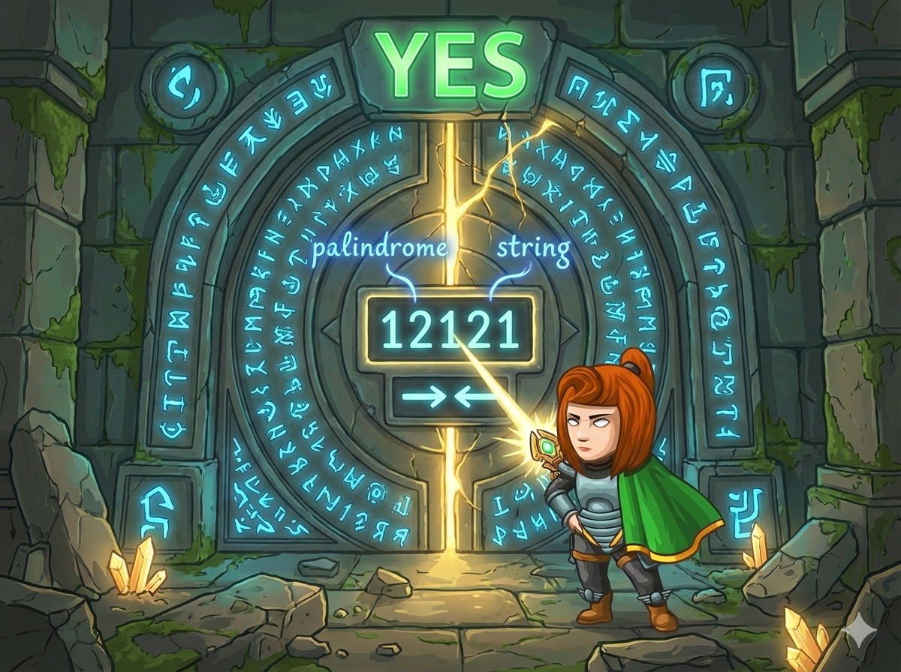

英雄发现了一扇“时间之门”。门上刻着一串符号，传说只有当这串符号 完全对称（回文）时，大门才会开启。
回文规则：
从前向后读和从后向前读完全一样。
无论字符是字母、数字还是奇形怪状的符号，只要镜像对称，就是回文！
👉 任务： 判断输入的字符串是否为回文。如果是输出 YES，否则输出 NO。
这一关要求我们处理更复杂的字符，可能包含空格和特殊符号。
读取： 使用 cin.getline(a, 1001) 读入包含所有符号的一整行。
计数： 使用双变量 i 和 j 分别从两头向中间走，每发现一对相等的字符，计数器 c 就加 1。
Python 处理字符串最快的方法是 切片反转。
代码 s == s[::-1] 的意思就是：“看原句和它的倒影是否完全一模一样”。
使用对称计数法，精准判断每一对字符。
#include <bits/stdc++.h> using namespace std; char a[1001]; // 存储输入字符的阵列 int main() { int n, i, j, c = 0; // 1. 读取一整行（包含空格和符号） cin.getline(a, 1001); // 2. 获取字符总长度 n = strlen(a); // 3. 双指针从两头向中间扫描 for (i = 0, j = n - 1; i < j; i++, j--) { // 如果发现对称位置相等 if (a[i] == a[j]) { c++; // 匹配数 +1 } } // 4. 判断逻辑 // 对于长度为n的字符串，应匹配 n/2 次 if (c == n / 2) { cout << "YES"; } else { cout << "NO"; } return 0; }
利用 Python 强大的字符串切片，开启时间之门。
# 1. 读入整行字符串 s = input() # 2. 回文大判断 # s[::-1] 是将字符串反转的“魔法” if s == s[::-1]: print("YES") else: print("NO")